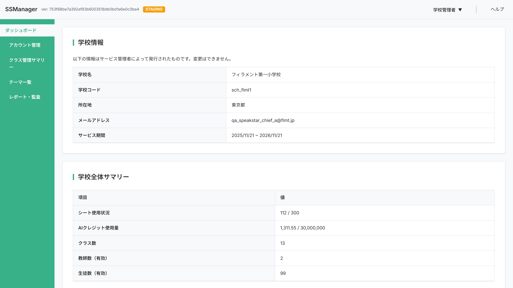
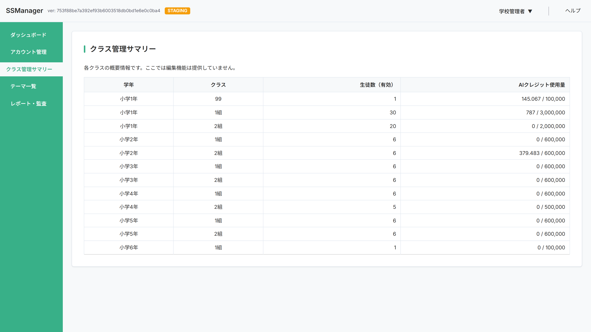
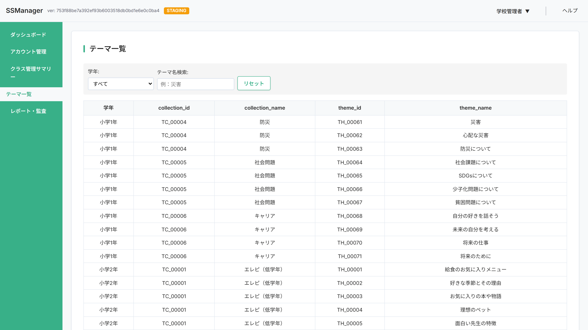
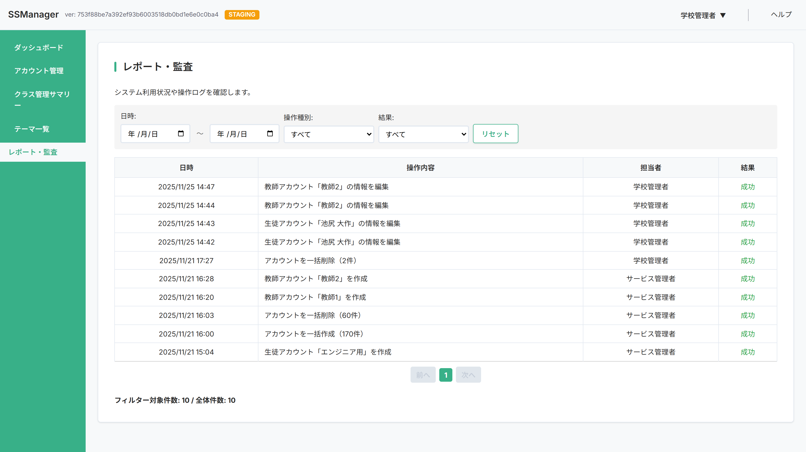

3. 学校管理者機能
3.1 ダッシュボード

-
この画面の目的
- 自校の基本情報と利用状況を確認できます
- 学校情報: 学校名や連絡先など、登録されている基本情報を表示
- 学校全体サマリー: アカウント数やAIクレジットなど、現在の利用状況を表示
-
学校情報
- 学校名: 登録されている学校名
- 学校コード: 学校を識別するコード
- 所在地: 学校の住所
- メールアドレス: 連絡先メールアドレス
- サービス期間: SpeakStarの利用可能期間
-
学校全体サマリー
- シート使用状況: 作成数 / 上限 （シート = アカウント。1シートで1アカウント作成可能）
- AIクレジット使用量: 使用量 / 上限
- クラス数: 登録されているクラスの数
- 教師アカウント数: 有効な教師アカウントの数
- 生徒アカウント数: 有効な生徒アカウントの数
注意
- シート上限: 上限に達するとアカウントを新規作成できなくなります。追加が必要な場合はサービス管理者へ連絡してください
- AIクレジット上限: 上限に達するとサービスを利用できなくなります。上限に近づいている場合はサービス管理者へ連絡してください
3.2 アカウント管理

-
この画面の目的
- 自校の教師・生徒アカウントを管理できます
- アカウントの作成・編集・削除、パスワードリセットなどの操作が可能です
- 一覧から目的のアカウントを検索・絞り込みできます
-
新規アカウント登録
新規アカウントの登録方法は2種類あります：
- 手動登録（1件ずつ登録）
- 教師: 名前、名前の読み、メールアドレス
- 生徒: 学年、クラス、出席番号、生徒ID、名前、名前の読み
- TSV一括登録（最大300件まで）
- 既存の生徒IDとの重複チェックを実施
TSVファイルの作成方法- ExcelまたはGoogleスプレッドシートを開く
- 1行目に列名を入力: 学年, クラス, 出席番号, 生徒ID, 名前, 名前の読み, メールアドレス, 登録日, 最終ログイン
- 2行目以降にデータを入力
- 「名前を付けて保存」→「タブ区切り(.tsv)」形式で保存
入力時の注意:
- 教師の場合: 学年は「0」、メールアドレスは必須
- 生徒の場合: メールアドレスは空欄
- 生徒ID: 最大50文字、半角英数字と記号（-_.）のみ使用可
- 手動登録（1件ずつ登録）
-
アカウント一覧で確認できる情報
- アカウント種別: 教師または生徒
- 学年: 小学1年〜中学3年（教師は「設定なし」）
- クラス: 所属クラス（教師は空欄）
- 出席番号: クラス内の出席番号（教師は空欄）
- 生徒ID: 生徒を識別するためのID（教師は空欄）
- 名前・読み: アカウントの名前と読み仮名
- AIクレジット使用量: 使用したAIクレジット数
- 登録日: アカウント作成日
- 最終ログイン: 最後にログインした日時
- 状態: 有効（ログイン可能）または無効（ログイン不可、データは保持）
※ デフォルトの並び順: 学年（昇順）→ クラス（昇順）→ 出席番号（昇順）
-
絞り込み・検索機能
- 絞り込み: アカウント種別、学年でフィルタリング
- 検索: 名前、メールアドレス、生徒IDで検索
-
アカウント操作
各アカウントに対して以下の操作が可能です：
- 基本情報の変更
- 教師: 名前・読み、状態（有効/無効）の変更
- 生徒: 上記に加えて、学年、クラス、出席番号、生徒IDの変更
- パスワードリセット
現在のパスワードをリセットし、初期パスワードを再発行 - 学習データリセット（生徒のみ）
- チャット履歴、思考力ポイント、テーマの進捗状況、プレゼンテーション履歴を削除
- ※削除したデータは元に戻せません
- アカウント削除
- AIクレジットを消費していないアカウントのみ、最大300件まで一括で削除可能
- アカウントの選択方法:
- 「すべて選択」チェックボックス: クレジット未消費のアカウントに一括でチェック
- 各アカウントのチェックボックス: 個別に選択
- 基本情報の変更
注意
- 生徒ID: 同一学校内で重複しないよう注意してください
- アカウント削除: 削除されたアカウントは復元できません
- 状態の無効化: 無効にしたアカウントはログインできなくなります
FAQ
Q 生徒IDが重複エラーになります
A
同一学校内で同じ生徒IDが使用されています。異なる生徒IDを入力してください。
Q アカウントの状態を変更したい場合は？
A
アカウント一覧の操作列にある編集ボタンを押下し、開かれたダイアログ内の状態項目から「有効」「無効」を切り替えることができます。
3.3 クラス管理サマリー

-
この画面の目的
- 学年・クラスごとの生徒数とAIクレジット使用状況を一覧で確認できます
- どのクラスがどれくらいAIを活用しているかを把握できます
-
確認できる情報
- クラス名: クラスの名称
- 学年: 小学1年〜中学3年
- 生徒数: 有効な生徒アカウントの数
- AIクレジット使用量: クラス全体で使用したAIクレジット数
-
絞り込み・並び替え機能
- 絞り込み: 学年
- 並び替え: 各列での並び替え
3.4 テーマ一覧

-
この画面の目的
- 自校に割り当てられているテーマを確認できます
- 学年ごとにどのテーマが利用可能かを把握できます
- ※この画面は閲覧専用です（テーマの追加・編集・削除はできません）
-
確認できる情報
- テーマコレクション: テーマコレクションID、テーマコレクション名
- テーマ: テーマID、テーマ名、表示順
- 学年割り当て: 小学1年〜中学3年ごとの割り当て状況
-
絞り込み機能
- 学年: 小学1年〜中学3年で絞り込み
- テーマ名: テーマ名で検索
FAQ
Q テーマを追加・変更したい場合は？
A
テーマの追加・変更はサービス管理者に連絡してください。
3.5 レポート・監査

-
この画面の目的
- 管理画面で行われた操作履歴を確認できます
-
確認できる情報
- 日時: 操作が行われた日時
- 操作内容: 実行された操作の詳細
- 担当者: 操作を行った管理者名
- 結果: 成功または失敗
-
絞り込み機能
- 期間: 開始日〜終了日で絞り込み
- 操作種別: アカウントで絞り込み
- 結果: 成功で絞り込み
記録される操作
- アカウント管理: 作成、編集、削除、一括登録・削除
- パスワードリセット
- 生徒データリセット